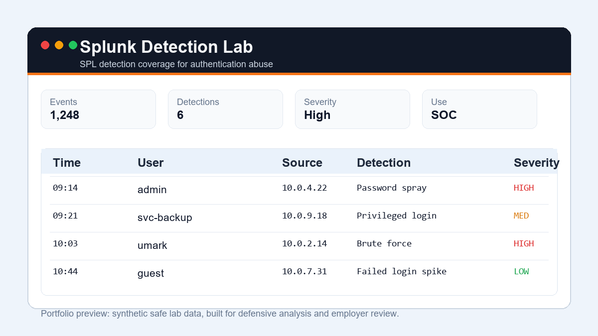
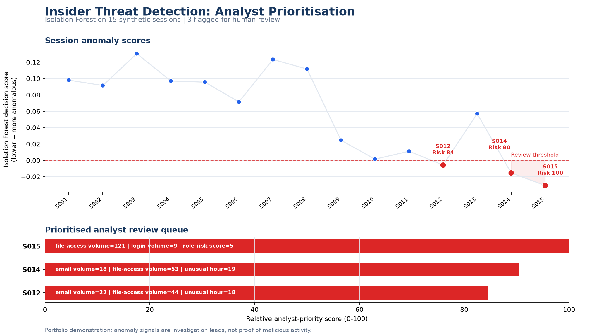

Selected work
Three projects to start with: the task, the output, and the limits of the available evidence.

Sentinel SOC Dashboard
Output: The eight-alert introduction produces five cases. An extended 1,014-alert synthetic exercise checks daily sessions, shuffled input, incomplete identities, and scanner context.
Decision and tradeoff: Grouping by source IP and host now uses fixed 30-minute windows. This separates daily sessions, while long-running incidents can still cross a window boundary.
Scope: A Python demonstration using supplied alerts, with no live Microsoft Sentinel connection. Priority scores and ATT&CK mappings are review heuristics.
SOC AnalystPythonMITRE ATT&CKTests + CI

Splunk Detection Lab
Output: Three SPL detections for brute force, password spraying, and unusual privileged login, with synthetic logs and local Python checks.
Analyst judgement: Review service-account retries, approved testing, and change tickets before escalating authentication failures.
Scope: Linked evidence covers SPL source and Python validation. It does not establish successful execution inside Splunk.
SplunkSOC AnalystSPLTests

Insider Threat Detection Final Project
Output: A university project exploring user activity with Isolation Forest and Random Forest, with plots and an example analyst report.
Interpretation: An anomalous session needs investigation. A model score does not establish malicious intent.
Scope: The public version uses a small sanitised sample. It does not establish detection accuracy on real employee activity.
Final Year ProjectMachine LearningInsider ThreatPythonSOC
More projects: cloud security, DevOps, and analysis tools
Supporting labs and learning projects. Each repository describes its deployment and validation status.
DevOps Deployment Lab
Containerised SOC dashboard with Docker, GitHub Actions CI/CD, Terraform AWS infrastructure, health checks, monitoring configuration, and tested recovery drills. Verified locally and in CI; live AWS deployment is pending.
DevOpsDevSecOpsDockerTerraformAWSTests + CI
Microsoft Sentinel SIEM Lab
KQL analytics, Sentinel-style sample logs, analytic rule metadata, incident triage notes, and tests for common SOC detections.
Microsoft SentinelKQLMITRE ATT&CK
Azure Security Posture Reviewer
Cloud security review tool for Azure storage, NSGs, Key Vault, and public IP exposure, with remediation guidance and unit tests.
AzureCloud SecurityPython
Cloud IAM Risk Analyzer
Reviews AWS IAM policy JSON for wildcard permissions, risky PassRole, public principals, missing MFA conditions, and broad resource scope.
Cloud SecurityAWS IAMPython
Phishing Email Analyzer
Parses .eml files for suspicious URLs, authentication failures, sender mismatch, urgency language, attachments, and risk labels.
SOC AnalystEmail SecurityPython
Vulnerability Intelligence Prioritizer
Ranks CVEs using CVSS, known exploitation, internet exposure, and asset criticality, then assigns remediation SLAs.
Vulnerability ManagementRisk ScoringPython
Web Security Posture Auditor
Passively audits HTTPS and common security headers including HSTS, CSP, X-Frame-Options, and Referrer-Policy.
AppSecSecurity HeadersPython
Security Research Notes
Defensive notes covering OWASP Top 10, phishing analysis, Windows event logs, Splunk/Sigma/YARA basics, cloud IAM risk, and vulnerability management.
Active LearningSOCAppSecCloud Security
About me
I graduated from Anglia Ruskin University with a 2:1 in Cyber Security. My penetration-testing training contract involved vulnerability assessment, alert review, and remediation reporting.
I am seeking a junior SOC or cyber security analyst role where I can develop investigation skills and contribute Python automation. Reports, source code, and lab instructions are linked throughout this portfolio.
Next validation steps
Detection labs: Document SPL and KQL execution in the target platforms, including ingestion settings, query results, and false-positive tuning.
Triage tool: The 1,014-alert exercise and 18 unit tests now cover bounded grouping and incomplete identities. Next: malformed input handling, deduplication, and richer correlation.
Cloud lab: Complete and document an authorised AWS deployment and teardown. Current DevOps evidence covers local and CI validation.
Investigation exercise: a scanner at priority 100
A constructed lab case starts with six high-severity reconnaissance alerts. The initial hypothesis is hostile scanning. An authored exercise ticket matches the source, target, and time window, supporting a revised conclusion of authorised activity.
The tool still assigns priority 100: this observed limitation shows why a score needs analyst review. A separate suspicious login sequence remains prioritised. The exercise also exposed unbounded correlation across days; the revised implementation uses 30-minute windows.
Reproducible local evidence: 1,014 synthetic alerts, 10/10 exercise checks, and 18/18 unit tests. These are regression results, not operational detection accuracy or live SIEM validation.
Read the evidence and revised conclusion · Inspect generated results
Synthetic SOC report preview
Illustrative lab priorities and response targets; these are configured heuristics, not measured risk probabilities or operational SLAs.
| Priority | SLA | Host | MITRE |
|---|
| 100 | Immediate | web-01 | T1110, T1078 |
| 88 | 4 hours | win-07 | T1059 |
| 33 | Monitor | portal-01 | T1595 |
Featured Writeup
How I Built a SOC Alert Triage Tool
A readable case study covering the problem, design choices, scoring model, what I learned, and how I would improve it in production.
Read the writeup
Skills
Current focus areas from university, project work, training contract experience, and hands-on labs.
Python
SOC Triage
MITRE ATT&CK
Phishing Analysis
AWS IAM
Nmap
Burp Suite
OpenVAS
Digital Forensics
Security Reporting
GitHub Actions
Technical Documentation
Experience
Penetration Tester - ITservicehub
Training contract focused on live vulnerability scanning, alert analysis, false-positive review, HTTP security headers, and stakeholder-ready reporting.
BSc Cyber Security - Anglia Ruskin University
Graduated with 2:1. Completed practical work in ethical hacking, digital forensics, penetration testing, and AWS secure deployment.
Professional certificates
Google Cybersecurity Professional Certificate
Security foundations, Linux, SQL, detection and response, and Python automation. Verify
Microsoft Cybersecurity Analyst Professional Certificate
Networking, cloud security, Microsoft security tools, and compliance. Verify
Short courses and job simulations
Additional learning activities, listed separately from professional certificates.
CompTIA a+ Cyber (Coursera course)
Coursera course authorized by CompTIA, focused on IT and cyber foundations relevant to junior support and security roles. Verify
Microsoft Windows Defender and Firewall for Beginners
Guided project covering Windows Defender and firewall fundamentals for endpoint protection and defensive configuration. Verify
Wireshark for Beginners: Capture Packets
Coursera project focused on packet capture basics and introductory network traffic analysis. Verify
Analyze Network Traffic with TCPDump
Coursera project covering safe command-line packet capture and network traffic review with TCPDump. Verify
Forage Cybersecurity Job Simulation - Phishing Simulation
Completed practical tasks in designing a phishing email simulation and interpreting phishing simulation results. Issued April 2025.
Forage Cybersecurity Job Simulation - Risk Assessment
Completed practical tasks in APT breach impact analysis and cybersecurity risk assessment. Issued April 2025.
Forage Cybersecurity Analyst Job Simulation - IAM
Completed practical tasks in IAM fundamentals, IAM strategy assessment, custom IAM solutions, and platform integration. Issued June 2025.